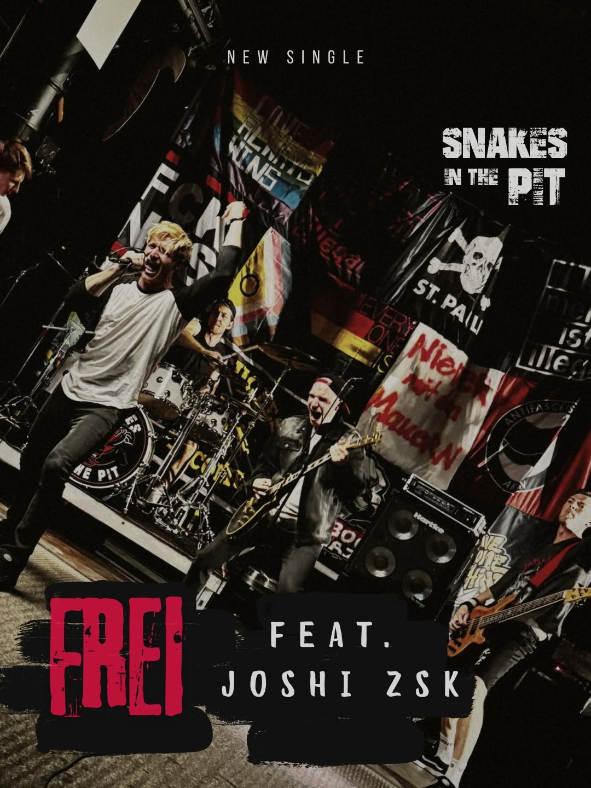

Review
SNAKES IN THE PIT feat. Joshi (ZSK) – Frei

Mit Snakes in the Pit hatte Chris schon ein Interview geführt, weil bei mir mal wieder irgendetwas dazwischenkam. Joshi habe ich beim Erscheinen der „Hassliebe“-Superbox einen etwas teureren Prank gespielt. Und am 27. März 2027 stehen Snakes in the Pit auch noch bei unserem 5-Jahre-RandaleFUNK-Festival im Lokvogel Hemer auf der Bühne.
Somit gibt es hier von mir keine Objektivität. Lest weiter oder lasst es.
„Frei“ kenne ich schon aus dem Video vom Oktober 2025. Jetzt gibt es die Album-Version mit Joshi von ZSK. Für alle, die offenbar noch nicht genug von meiner Vorbelastung haben.
Snakes in the Pit nennen „Frei“ ihre Melodic-Hardcore-Hymne gegen Hass, Spaltung und Rechtsruck und ein klares Ja zu Vielfalt, Menschlichkeit und Demokratie. Außer das mit der Demokratie. Da hätte ich als alter Anarchist noch Änderungswünsche. Der Rest passt. Dazu diese melodische Brutalität, die ich bei ihnen so feiere.
Jetzt leiht also auch noch Joshi seine lärchenhafte Stimme dazu. Und ganz ehrlich: Sooo schlecht wie vermutet macht der Typ sich gar nicht. Man könnte meinen, Joshi hätte eine Punkrock-Band oder so was.
Er fügt sich frech, aber geschmeidig in seine Passage ein. Ich höre da keinen Gast, der erst einmal Platz für seinen großen Auftritt braucht. Das passt zusammen, und ich habe wieder einen Grund, „Frei“ aufzulegen.
Ich wollte gerade schreiben, dass der Song dadurch neue Aktualität bekommt. Fuck. Als hätte das Thema je welche verloren. Hass und Spaltung machen schließlich keine Pause, nur weil das erste Video schon ein Jahr alt ist.
Für mich bleibt es eine geile Nummer. Jetzt eben mit Joshi. Den müssen wir wohl dulden.
So gehört Hamburg City Hardcore!
Ich geh jetzt was kaputt-tanzen.
Hören und weitergucken
„Frei“ feat. Joshi (ZSK) – Album-Version auf YouTube · Das ursprüngliche Musikvideo
Chris im Interview mit Snakes in the Pit · Der ZSK-Prank zur „Hassliebe“-Superbox